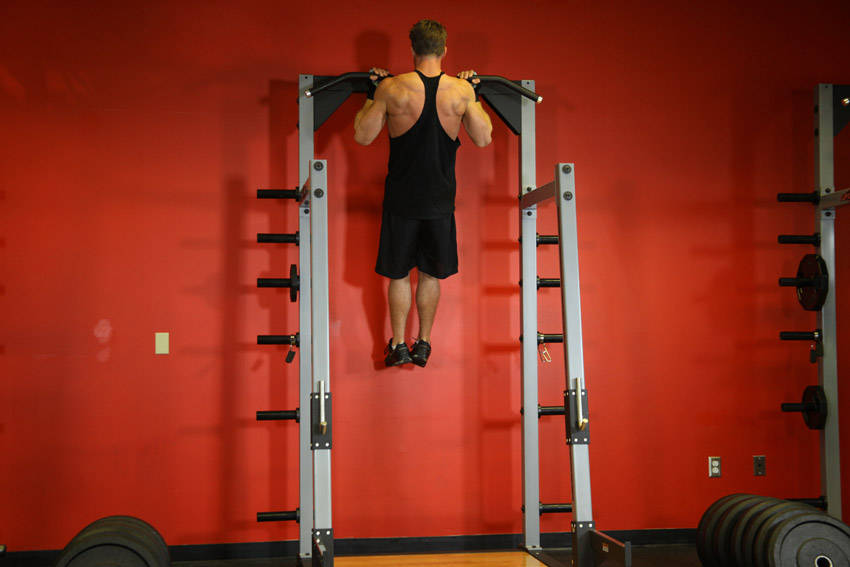

- Grab the pull-up bar with the palms facing your torso and a grip closer than the shoulder width.
- As you have both arms extended in front of you holding the bar at the chosen grip width, keep your torso as straight as possible while creating a curvature on your lower back and sticking your chest out. This is your starting position. Tip: Keeping the torso as straight as possible maximizes biceps stimulation while minimizing back involvement.
- As you breathe out, pull your torso up until your head is around the level of the pull-up bar. Concentrate on using the biceps muscles in order to perform the movement. Keep the elbows close to your body. Tip: The upper torso should remain stationary as it moves through space and only the arms should move. The forearms should do no other work other than hold the bar.
- After a second of squeezing the biceps in the contracted position, slowly lower your torso back to the starting position; when your arms are fully extended. Breathe in as you perform this portion of the movement.
- Repeat this motion for the prescribed amount of repetitions.
This exercise appears in Programmd training programs. Take the quiz to find one for your gym.
Find your program